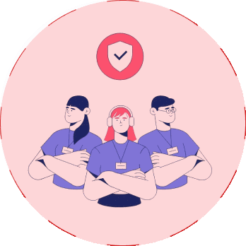
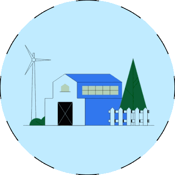

हमारे बारे में
सोच बदलो - गाँव बदलो टीम
“सोच बदलो-गांव बदलो टीम” का गठन ग्रामीण परिवेश के “जागरूक” और “पे-बैक टू सोसायटी” के सिद्धांत पर विश्वास रखने वाले युवाओं ने ग्रामीण संस्कृति और परिवेश को बनाए रखते हुए गाँवों को विकास और आधुनिकता से जोड़ने में सहयोग करने के उद्देश्य किया है। टीम का ध्येय वाक्य है- “जनजागरूकता और सक्रिय जनसहभागिता द्वारा गांव विकास के लक्ष्य को प्राप्त करना| गाँवों में जागरूकता,गुणवत्तापूर्ण व रोजगारोन्मुखी शिक्षा, स्वास्थ्य सेवाओं, रोजगार के साधनों, आधारभूत सुविधाओं, खेती की आधुनिक तकनीकों, सरकारी योजनाओं और विकास कार्यक्रमों के विषय में पर्याप्त जानकारी के अभाव में समाज में सामाजिक, राजनीतिक और आर्थिक लोकतंत्र और न्याय स्थापित कर एक समतामूलक समाज स्थापित करना नाममुकिन है। अतः इन सभी समस्याओं के समाधान और ग्रामीण भारत के जीवन स्तर में गुणात्मक परिवर्तन लाने के लिए शिक्षित, जुझारू, जागरूक और संगठित युवा पीढ़ी ने नई सोच, नई रणनीति, नए उत्साह और नई उमंग के साथ "सोच बदलो-गाँव बदलो" अभियान की शुरुआत की है।

सोच बदलो-गांव बदलो टीम के कार्यकर्ता जमीनी स्तर पर सकारात्मक और रचनात्मक कार्यों में संलग्न हैं जैसे- लोगों में जागरूकता और सामाजिक जनचेतना पैदा करना, जल संरक्षण व पर्यावरण संवर्धन के लिए काम करना, बच्चों में शिक्षा के प्रति जागरूकता पैदा करना, प्रतिभाशाली छात्रों को स्वस्थ प्रतिस्पर्धा पैदा करना, युवाओं का मार्गदर्शन करना और स्वरोजगार हेतु कौशल विकास करना, गरीब प्रतिभाशाली छात्रों को आर्थिक सहयोग प्रदान करना, महिलाओं विशेषरूप से बालिकाओं के सशक्तिकरण हेतु प्रयास करना, उत्थान पुस्तकालय और उत्थान कोचिंग संस्थान का संचालन करना, गाँव विकास में ग्रामीणों की सक्रिय भागीदारी सुनिश्चित करना, गांव की समस्याओं के विषय में मंथन करना, परस्पर सहयोग, सामंजस्य और जन सहभागिता के माध्यम से गाँव की समस्याओं का समाधान गाँव स्तर पर निकालना, ग्राम पंचायत द्वारा किए जाने वाले कार्यों के विषय में लोगों को जागरूक करना, सरकार की विभिन्न योजनाओं के विषय में ग्रामीणों को सजग करना और उनका लाभ लोगों तक पहुंचाने में सहायता करना, प्रशासन और ग्रामीण लोगों के मध्य सेतु का कार्य करना, जागरूकता रैलियों के माध्यम से नशाखोरी के दुष्परिणामों से लोगों को अवगत कराना, जरूरतमंद लोगों को रक्तदान के माध्यम से रक्त उपलब्ध कराना इत्यादि। इन प्रयासों के माध्यम से टीम ग्रामीण लोगों के जीवन स्तर को ऊपर उठाने और उन्हें विकास की मुख्यधारा से जोड़ने में महत्वपूर्ण योगदान दे रही है। सोच बदलो-गांव बदलो संस्था द्वारा उपरोक्त कार्यों का संचालन संस्थागत रूप से विभिन्न कार्यक्रमों के माध्यम से किया जा रहा है जैसे - "सोच बदलो-गांव बदलो यात्रा", “क्लीन विलेज-ग्रीन विलेज”, "आओ पढ़ें-आगे बढ़े", "शिक्षा पाओ-ज्ञान बढाओ प्रतियोगिता', "उत्थान कोचिंग संस्थान", "रक्तदान-महादान", "महिला सशक्तिकरण", "आधुनिक खेती-हमारा प्रयास"| इन कार्यक्रमों का संचालन चीफ कोऑर्डिनेटर, एरिया कोऑर्डिनेटरों, मुख्य कोऑर्डिनेटरों और गाँव कोऑर्डिनेटरों के माध्यम से किया जा रहा है। सोच बदलो-गांव बदलो टीम आपसे अपील करती है कि आप भी टीम का सदस्य बनकर अपने गांव और क्षेत्र के विकास में अपना सकारात्मक योगदान दें।
सोच बदलो - गांव बदलो टीम के उद्देश्य
सोच बदलो - गांव बदलो एक ऐसी विचारधारा है; जो इंसान को इंसान से जोड़ती है, भाई को भाई से जोड़ती है, बेटे को परिवार से जोड़ती है, परिवार को गांव और गांव को समाज से जोड़ती है तथा समाज को देश से जोड़ती है। यह समाज में सकारात्मक और रचनात्मक कार्यों को आगे बढ़ाने और युवाओं की ऊर्जा को सही दिशा देने वाला एक अभियान है। यह एक ऐसा अभियान है जो गांवों को विकास की मुख्यधारा से जोड़ने हेतु प्रयासरत है। यह एक ऐसी विचारधारा है जो गांव के लोगों की सक्रिय सहभागिता, प्रशासन के सहयोग और विभिन्न गैर सरकारी संगठनों के प्रयासों को संगठित कर गाँवों के विकास का एक नया मॉडल लेकर आई है। सोच बदलो गांव बदलो टीम अपने प्रयासों से युवाओं का मार्गदर्शन करने, गांव और समाज के प्रति उनके उत्तरदायित्व के प्रति जागरूक करने और सबसे बढ़कर राष्ट्र निर्माण की प्रक्रिया में अपना सहयोग सुनिश्चित करने का अवसर प्रदान कर रही है। टीम ने गांवों से पढ़-लिख कर निकले हजारों कर्मचारियों और विभिन्न क्षेत्रों में कार्य कर रहे लोगों को अपने गांव की ओर वापस मुड़कर देखने तथा अपने गांव के विकास में प्रत्यक्ष और अप्रत्यक्ष रूप से योगदान देने की सोच को विकसित किया है। टीम द्वारा युवाओं की ऊर्जा को सकारात्मक और रचनात्मक कार्यों की ओर मोड़ा है तथा उन्हें वो रास्ता दिखाया है ।

जिसके माध्यम से वे अपने गांव के विकास में योगदान देकर
आत्मसम्मान और आत्म संतुष्टि का
अनुभव कर सकते हैं । “सोच बदलो-गांव बदलो अभियान” निम्नलिखित उद्देश्यों के साथ काम
कर
रहा है:
1. गाँवों में सकारात्मक सोच और रचनात्मक कार्यों द्वारा जन जागरूकता पैदा करना और
विकास के लिए जनचेतना उत्पन्न करना; ताकि आमजन अपने अधिकारों और दायित्वों के प्रति
संवेदनशील हो सकें और विकास प्रक्रिया का हिस्सा बनें ।
2. गाँवों की स्थानीय समस्याओं पर विचार करने और उनका स्थानीय स्तर पर समाधान खोजने का
प्रयास करना। गाँवों के विकास को गति देने के लिए "गाँव विकास समितियों" का गठन करना।
जिसका प्रमुख ध्येय ग्राम सभा और ग्राम पंचायत के साथ सहयोगात्मक समन्वय स्थापित कर
गांव के विकास के लिए कार्य करना ।
3. युवा पीढ़ी का उचित मार्गदर्शन करना तथा युवाओं की ऊर्जा को सकारात्मक दिशा देना
ताकि हमारे युवा प्रगति पथ पर आगे बढ़ते हुए राष्ट्र निर्माण की प्रक्रिया में भागीदारी
निभा सकें।
4. बच्चों में नैतिक व मानवीय मूल्यों का विकास करना ताकि शिक्षा की गुणवत्ता के
साथ-साथ स्वस्थ सामाजिक वातावरण कायम किया जा सके। इस हेतु गाँवों में उत्थान बाल
संस्कार केंद्रों की स्थापना करना। विद्यालय विकास एवं प्रबन्धन समिति (SDMC) के माध्यम
से सरकारी विद्यालयों में शिक्षा की गुणवत्ता सुनिश्चित करने के लिए कार्य करना ।
5. प्रतिभाशाली विद्यार्थियों को नियमित रूप से सम्मानित और प्रेरित करना। शिक्षा के
क्षेत्र में जरूरतमंद बच्चों की आर्थिक सहायता करना। गाँवों में "उत्थान पुस्तकालय
खुलवाना" और "उत्थान कोचिंग संस्थान" तथा उनका नियमित संचालन करना।
6. ग्रामीणों को सरकारी योजनाओं और विकास कार्यक्रमों की जानकारी देना। सरकारी योजनाओं
(केंद्र / राज्य / नाबार्ड) की जानकारी और उनके लाभ लाभार्थियों तक पहुँचाने में सरकारी
एजेंसीज का सहयोग करना। इस अभियान का मूल मंत्र है – विकास प्रक्रिया में आमजन की
सक्रिय भागीदारी |
7. "वित्तीय समावेशन" सुनिश्चित करने के लिए वित्तीय साक्षरता कार्यक्रम आयोजित करना।
वित्तीय समावेशन के महत्व के प्रति ग्रामीणों को जागरूक करना और क्रेडिट (KCC / GCC /
ACC) के विषय में जागृति लाना। अधिकतम लोगों को बैंकिंग व्यवस्था से जोड़ने का प्रयास
करना ।
8. स्वयं सहायता समूह, किसान समूह, महिला मंडल, युवा संगठन और चौपाल जैसी व्यवस्थाओं को
स्थापित करके लोगों को नियमित रूप से भागीदारी के लिए प्रेरित करना और गांव के सुधार
एवंम विकास कार्यों पर परिचर्चा और सामूहिक निर्णय के लिए प्रेरित करना है। सहकारी
समितियों के माध्यम से स्थानीय स्तर पर रोजगार सृजन का प्रयास करना ।
9. समाज में व्याप्त कुरीतियों जैसे- मृत्यु भोज, दहेज प्रथा, बाल-विवाह, अंधविश्वास,
पाखंड आदि को खत्म करके वैज्ञानिक सोच पैदा करना।
10. सामाजिक बुराइयों जैसे शराब, जुआ, गुटखा, बीड़ी और तंबाकू आदि व्यसनों से होने वाली
समस्याओं और रास्तों पर अतिक्रमण की समस्या के प्रति लोगों को सजग करना और इनके उन्मूलन
की दिशा में प्रयास करना।
11. लोगों को पर्यावरण के प्रति जागरूक करना ताकि पेड़ व पानी का संरक्षण किया जा सके।
इसके अंतर्गत वृक्षारोपण, जल संरक्षण अभियान, अतिक्रमण मुक्ति अभियान, स्वच्छता अभियान
इत्यादि कार्यक्रम संचालित करना। किसानों को खेती की आधुनिक तकनीकों और सरकारी योजनाओं
की जानकारी उपलब्ध कराना ताकि उन्नत खेती के साथ हमारे गांवों में खुशहाली लाई जा सके।
12. लोगों में समरसता, वैज्ञानिक दृष्टिकोण, मानवतावादी एवं विकासोन्मुखी सोच को बढ़ावा
देना। समता, न्याय और लोकतांत्रिक मूल्यों पर आधारित समतामूलक समाज का निर्माण करना।
सोच बदलो-गांव बदलो टीम का उद्भव
मूलतः इस विचार की उत्पत्ति राजस्थान प्रांत के धौलपुर जिले के एक छोटे से गांव धनौरा से हुई। भारत के प्रधानमंत्री के कर कमलों से आदर्श ग्राम सम्मान विजेता स्मार्ट विलेज धनौरा, (धौलपुर, राजस्थान) जिला मुख्यालय से 30 किमी और बाड़ी कस्बे से 5 किमी की दूरी पर उत्तर पूर्व में स्थित सुंदर और सुरम्य छोटा सा गांव है। धनौरा गाँव को “स्मार्ट विलेज” का अलंकरण भारतीय राजस्व सेवा के अधिकारी डॉ. सत्यपाल सिंह के विजन, आधुनिक व विकासवादी सोच, ग्रामीणों की सक्रिय सहभागिता, सरकार एवं जिला प्रशासन के सहयोग और इको-नीड्स फाउंडेशन प्रेसिडेंट (प्रोफ़ेसर प्रियानंद अगड़े) की स्मार्ट कार्य शैली व निस्वार्थ प्रयासों का परिणाम है। राज्य सरकार द्वारा धनौरा ग्राम पंचायत को राज्य स्तरीय पंचायत अवार्ड से नवाजा जा चुका है। आज हर घर में शौचालय, सीवरेज लाइन, सीवेज ट्रीटमेंट प्लांट, अतिक्रमण और कीचड़ मुक्त उच्च कोटि की कंक्रीट सड़कें, गौरव पथ, आधुनिक कम्यूनिटी सेंटर, सूचना केंद्र, कौशल विकास केंद्र, पुस्तकालय, ध्यान केंद्र, सोलर लाइट से जगमगाती गलियाँ, और दीवारों पर प्रेरणादायी व मनोहारी चित्रकारी स्मार्ट विलिज धनौरा सुंदरता में चार चांद लगा रहे हैं। धनौरा के संस्थागत विकास मॉडल, ग्रामीण विकास की मुहिम को दूसरे गांवों तक पहुंचाने और लोगों में जनचेतना पैदा करने के लिए "सोच बदलो गांव बदलो अभियान" की शुरुआत की गई है।
डॉ. सत्यपाल सिंह मीना और इको नीड्स फाउंडेशन के संस्थापक प्रोफेसर प्रियानंद अगड़े ग्रामीण परिवेश के “जागरूक” और “पे-बैक टू सोसायटी” के सिद्धांत पर विश्वास रखने वाले सक्रिय और कर्मठ युवाओं को साथ लेकर, विकास के संदर्भ में हाशिए पर चल रहे ग्रामीण क्षेत्रों में जन जागरूकता और विकास जन-चेतना उत्पन्न करने के उद्देश्य से एक विशाल "सोच बदलो गांव बदलो यात्रा" निकाली गई। इस यात्रा के माध्यम से राजस्थान, महाराष्ट्र और मध्यप्रदेश के लगभग 100 गांवों में विकासवादी सोच देने का सफल प्रयास किया गया। जैसे-जैसे यात्रा आगे बढ़ी, अपार जनसमर्थन मिलने से यात्रा एक जन अभियान का रूप लेती चली गई और इस "सोच बदलो गांव बदलो अभियान" ने अपने सकारात्मक और रचनात्मक कार्यों से लोगों के मन मस्तिष्क में सकारात्मक परिवर्तन लाना शुरू कर दिया। आज सोच बदलो-गांव बदलो अभियान के अंतर्गत "सोच बदलो-गांव बदलो यात्रा", “क्लीन विलेज-ग्रीन विलेज”, "आओ पढ़ें-आगे बढ़े", "शिक्षा पाओ-ज्ञान बढाओ प्रतियोगिता', "उत्थान कोचिंग संस्थान", "रक्तदान-महादान", "महिला सशक्तिकरण", "आधुनिक खेती-हमारा प्रयास" इत्यादि महत्वाकांक्षी कार्यक्रमों का सफल संचालन किया जा रहा है| इन कार्यक्रमों का संचालन चीफ कोऑर्डिनेटर, एरिया कोऑर्डिनेटरों, मुख्य कोऑर्डिनेटरों और गाँव कोऑर्डिनेटरों के माध्यम से किया जा रहा है। वर्तमान में यह अभियान देश अनेक गांवों, शहरों व कस्बों में युवा दिलों की धड़कन बन चुका है। इस अभियान से माध्यम से आज ग्रामीण परिवेश से निकला हुआ युवा अपनी जड़ों से जुड़कर अपने गांव के विकास में आप महती भूमिका निर्वाह कर रहा है। इस अभियान की सबसे बड़ी सफलता भी कही जा सकती है क्योंकि इस सकारात्मक मुहिम ने युवा पीढ़ी की ऊर्जा को सहेजकर रचनात्मक कार्यों के प्रति अभिप्रेरित किया है।
हमारे समर्थक